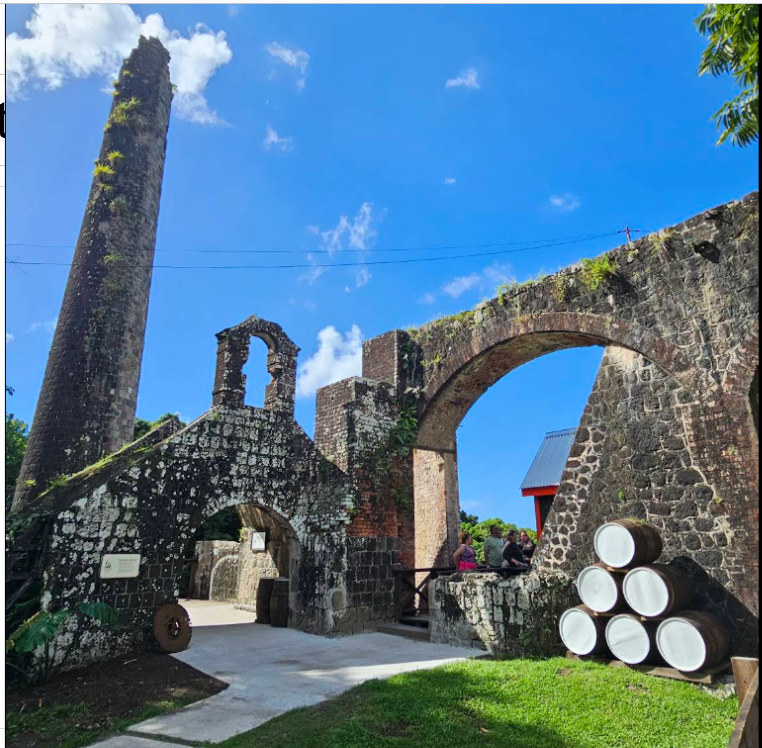
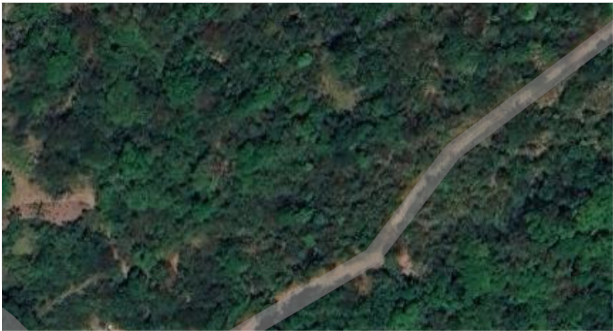

02 Sweet and Speed
무엇이 눈에 남고, 무엇을 더 찾아야 하나
노동자와 노예가 살던 곳에는
아무것도 남아 있지 않다— 라고 말하기 전에, 두 장을 나란히 놓는다

생산시설을 보여주는 사진 — 구조물의 형태가 쉽게 눈에 들어온다

주거지로 제시된 위성사진 — 나무 아래에서 과거 생활을 읽어내기는 어렵다 · Google Map 위성사진 · 2026년 1월 촬영 · 1828년 지도의 Negro Houses 자리
시설의 흔적과 사람의 삶은 다른 자료를 요구한다
출처: 발표자 제공 · Sweet and Speed · DAACS · The Spring (주거지 고고학의 존재 확인)